Overall Chapter Summary
Pertempuran berlanjut dengan strategi untuk menghentikan Velda, sambil menjelajahi kekuatan dan hubungan karakter.
Chapter Drift Analysis
Similarity: 1.0000
Drift: 0.0000
Low drift. The chapter remains semantically close to the early story baseline.
Bug Severity Distribution
Story Bugs Found
Event implies memory/knowledge, but no knowledge_gains or revelations were extracted.
Appears on timeline:
- event: ev_002_001 · Penemuan Bola Ingatan in sc_002 · Diskusi tentang Rudra at
Unknown
Meaning: This indicates memory or knowledge inconsistency. A character may know, remember, or reference something that has not been established.
Ciel claims that even if Velda accumulated a lot of energy, he would still not become overwhelmingly strong, yet Velda demonstrates impressive power that challenges this assertion. This creates a contradiction regarding the known limits of Velda's abilities.
Appears on timeline:
- matched by evidence: ev_001_001 · Pertemuan dengan Velda in sc_001 · Strategi untuk Menghadapi Velda at
Unknown
Type: The Contradiction
Definition: A character acts completely out of line with their established personality traits, or previously known facts are suddenly altered to fit a new scene.
The chapter introduces the sudden ability of Velda to close the gap between himself and the protagonist quickly without explaining the extent of his powers or how he managed to do so amid the ongoing circumstances. This lack of detail leaves a gap in the understanding of the battle dynamics.
Appears on timeline:
- chapter-level: No exact event match in Chapter-level issue at
Unknown
Type: Missing Details
Definition: A vital piece of information, a key item, or a character’s injury is forgotten, conveniently disappears, or magically reappears between chapters or scenes.
Rudra's reappearance as a memory ball creates intrigue, yet the implications of his identity and abilities in the ongoing battle are not explored or resolved, leaving a significant narrative thread unresolved.
Appears on timeline:
- matched by evidence: ev_002_001 · Penemuan Bola Ingatan in sc_002 · Diskusi tentang Rudra at
Unknown
Type: Forgotten Subplots
Definition: A secondary character is introduced with a heavy, specific conflict (like being cursed or having a missing family member), but this thread is completely abandoned before the story ends.
Character Sheet
Summary of character state, current actions, potential future plot hole risks, and acquired items/spells in this chapter.
Character Arc Analysis
Velda
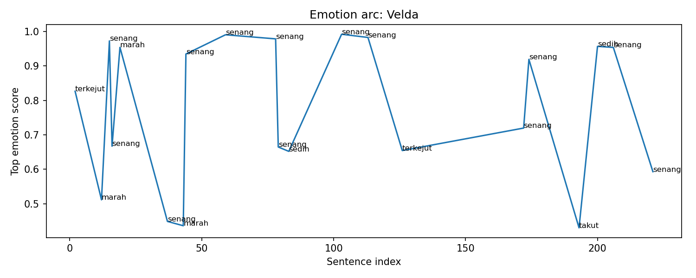
Emotional Arc Summary
Velda experiences a fluctuating emotional state throughout the chapter, starting with surprise at the protagonist's entrance, transitioning to anger as she becomes more vigilant. Her emotional arc then stabilizes into satisfaction and confidence as she prepares for the confrontation, but shifts to fear and sadness as the protagonist gains the upper hand.
Action-Based Interpretation
Velda’s actions reveal her initial surprise, followed by a protective stance against the protagonist. As the protagonist executes their plan, Velda's anger surfaces; however, she seems to settle into a more proactive position, even showing a complex mix of irritation and satisfaction when challenged.
Key Turning Point
A pivotal moment occurs when Velda's focus shifts towards a shared phenomenon, signaling her interest and possibly altering her strategy. This moment highlights her adaptability amidst a tense confrontation.
Narrative Meaning
Velda’s emotional journey underscores her complexity, revealing both her strength and vulnerabilities. This arc enriches the narrative tension between power and uncertainty.
Potential Writing Issue
Some emotional spikes, particularly sudden joy despite overwhelming odds, may feel inconsistent with the narrative events, which could diminish emotional impact.
Guy
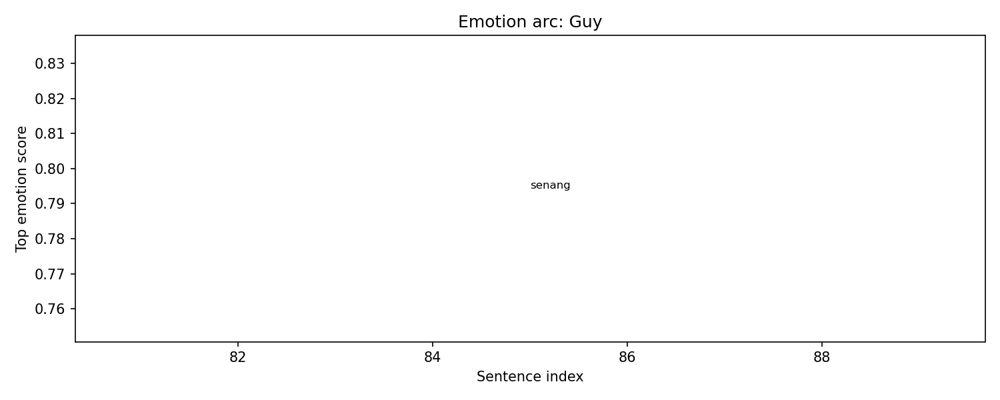
Emotional Arc Summary
In this chapter, Guy experiences a peak of happiness, driven by the combination of his own powers and those of his allies. The chapter's emotional high reflects the excitement of strategizing against Velda.
Action-Based Interpretation
While specific actions from Guy in this chapter are absent, his emotional state indicates a period of confidence and camaraderie. The mention of feeling like a potent force implies he is mentally preparing for the battle ahead, suggesting an internal readiness even if outward actions are not detailed.
Key Turning Point
The key turning point lies in the moment Guy acknowledges his strengths alongside other powerful characters. This realization boosts his spirits, potentially strengthening his resolve for the upcoming confrontation with Velda.
Narrative Meaning
The emotional high point emphasizes the importance of alliances and inner strength for Guy. It illustrates how unity can enhance individual confidence, setting a hopeful tone before the battle.
Potential Writing Issue
The absence of tangible actions to support Guy's positive emotional state creates a potential inconsistency, as readers may wonder how his joy translates into active participation in the unfolding events.
Milim
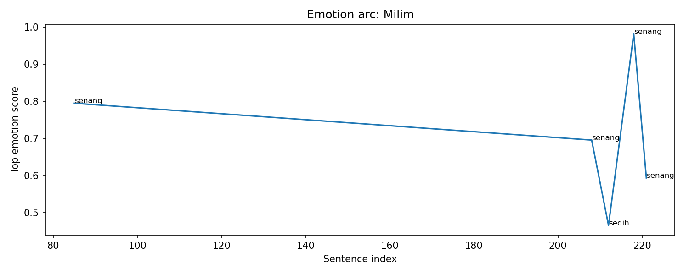
Emotional Arc Summary
Milim experiences a fluctuation of emotions primarily centered around happiness and a moment of sadness. The chapter begins with her excitement derived from the power dynamics at play, and this joy peaks when she is rescued, revealing her connection with others.
Action-Based Interpretation
Although the actions of Milim are not explicitly outlined, her emotional responses are tied to the strategic developments in the battle against Velda. She expresses happiness after being saved by Ramiris and Gaia, indicating her reliance on their support during perilous moments.
Key Turning Point
The key turning point occurs when Milim is rescued, transitioning her emotional state from sadness—impacted by her capture—to overwhelming joy as she reunites with her allies and acknowledges their strengths.
Narrative Meaning
This emotional arc emphasizes themes of camaraderie and reliance on friends. It shows how connections can uplift individuals during crisis, reinforcing the importance of teamwork in overcoming formidable challenges.
Potential Writing Issue
The abrupt shift to sadness when Milim is saved may create inconsistency, as her relief and happiness dominate the emotional timeline yet are followed by confusion rather than clarity in her emotional journey.
Ramiris
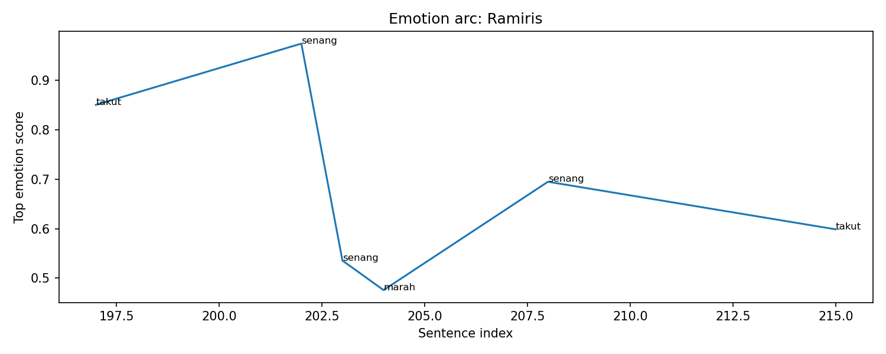
Emotional Arc Summary
Ramiris experiences a rollercoaster of emotions throughout the chapter, beginning with fear during battle, transitioning to happiness as strategic plans unfold, and culminating in a brief moment of anger and a return to joy through successful teamwork.
Action-Based Interpretation
Initially, Ramiris feels scared, indicated by her scream, likely due to the ongoing battle against Velda. As plans with Gaia develop, she feels happiness about the potential success, leading to a demonstration of confidence in her abilities. When implementing the labyrinth strategy, her anger surfaces, possibly due to the pressure of expectations. Nonetheless, her happiness returns as they save Milim, affirming the effectiveness of their teamwork and strategies.
Key Turning Point
The pivotal moment occurs when Ramiris, despite moments of fear and anger, successfully executes the labyrinth strategy with Gaia, leading to the rescue of Milim, showcasing her leadership and adaptability.
Narrative Meaning
This chapter highlights Ramiris's growth, illustrating her ability to navigate fear and anger while ultimately fostering collaborative triumphs, essential for character development.
Potential Writing Issue
The emotional shift from fear to joy and back to fear may feel abrupt without explicit actions signaling transitions, potentially causing inconsistency in the emotional flow.
Velgrynd
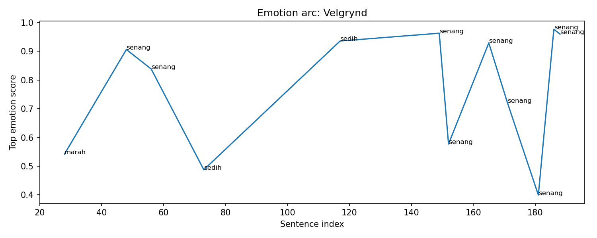
Emotional Arc Summary
Velgrynd experiences a fluctuating emotional journey, beginning with anger as they grapple with energy depletion. This emotion shifts to happiness when they realize potential cooperative strategies, reflecting hope in their capabilities. However, underlying sadness emerges when Velgrynd questions their situation, revealing vulnerability amidst the chaos of battle.
Action-Based Interpretation
Velgrynd demonstrates a mix of emotions through actions: they engage inquisitively with the ball, expressing a pivotal connection to Rudra. Their confusion turns to clarity as they accept and embrace the sword, indicating a readiness to support the group's objectives, despite earlier moments of doubt.
Key Turning Point
A key moment occurs when Velgrynd receives the sword, signifying acceptance and a proactive stance in the battle. This transition from sadness to happiness points to their acceptance of the situation and determination to fight alongside others.
Narrative Meaning
This emotional journey emphasizes themes of connection and resilience amidst conflict, highlighting the importance of alliance and courage in facing challenges.
Potential Writing Issue
The sudden emotional shifts, especially the rapid transitions from sad to happy, may create inconsistency. Ensuring the emotional changes are anchored by corresponding actions will enhance clarity.
Rudra
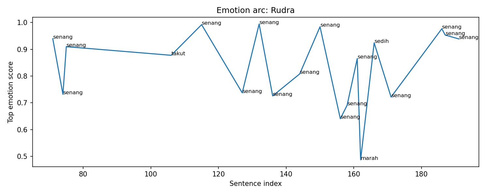
Emotional Arc Summary
Rudra's emotional journey in this chapter shifts from joy to a mix of fear, sadness, and anger. Initially, joy prevails as the character discovers Rudra’s potential consciousness within the ball, indicating an uplifting realization about connection and identity.
Action-Based Interpretation
Rudra engages in strategic discussions and exhibits excitement about the implications of his existence. The actions reveal his curiosity about his own potential, reinforced by his laughter and interactions with fellow characters like Velgrynd.
Key Turning Point
The turning point occurs when Rudra's essence is contemplated, leading to moments of fear and sadness regarding his past and the nature of his reincarnation. The realization that he might be completely different from the Rudra known before creates tension.
Narrative Meaning
This chapter underscores themes of identity and the weight of past experiences, emphasizing how connections can impact self-perception and emotional states amidst conflict.
Potential Writing Issue
The emotional spike of joy does not entirely align with the fear and sadness that follows, suggesting a possible inconsistency in emotional progression as the stakes rise with the battle against Velda.
Ciel-san
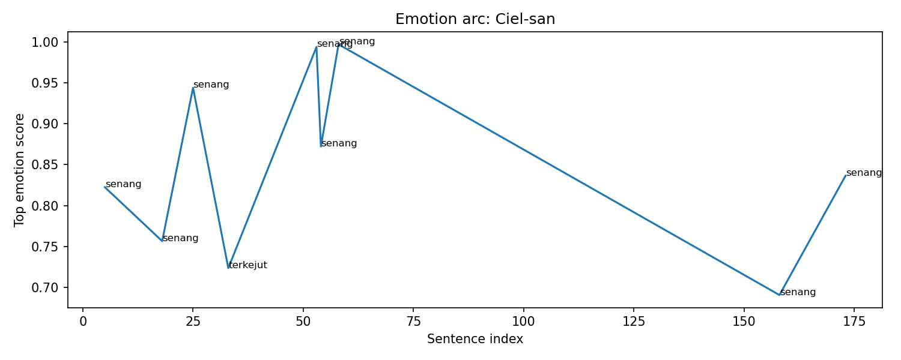
Emotional Arc Summary
Ciel-san experiences a strong sense of joy throughout the chapter as evidenced by her successful execution of strategies and interactions. The emotion timeline shows multiple peaks of happiness, particularly when she implements and modifies strategies effectively, showcasing her competence and dedication.
Action-Based Interpretation
While specific actions by Ciel-san are not listed, her involvement in implementing and turning ideas into usable energy illustrates her proactive role. Her commitment is confirmed through dialogue, reinforcing her dependable nature.
Key Turning Point
The moment of surprise regarding the situational hypothesis marks a potential turning point. This shift in emotional tone introduces intrigue and curiosity, which indicates her involvement in a larger strategic context.
Narrative Meaning
Ciel-san's joy and proactive engagement reflect her resilience against external challenges. Her positivity attracts support, demonstrating the importance of collaboration in overcoming obstacles.
Potential Writing Issue
While Ciel-san’s emotions align with her actions, the spikes in happiness without explicit descriptions of her actions may create slight inconsistencies. Clearer visualization of her contributions could enhance emotional coherence.
Veldora-san
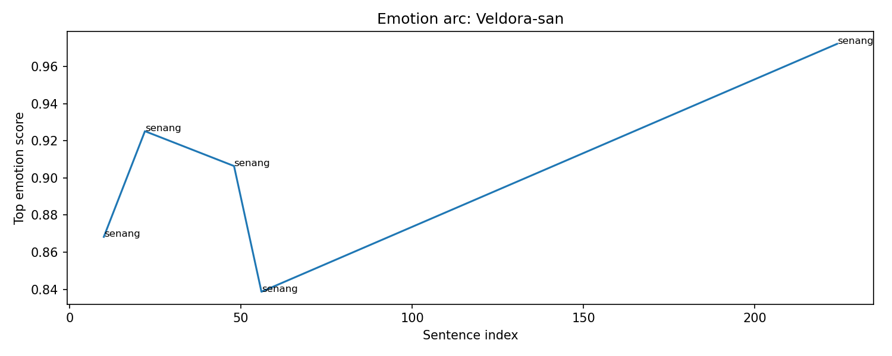
Emotional Arc Summary
Veldora-san experiences a consistent positive emotional state throughout the chapter, marked by a strong sense of understanding and potential collaboration. There's a noted happiness in comprehension and strategy, culminating in a surprising yet hopeful moment at the end.
Action-Based Interpretation
The character's actions reflect a confidence in strategizing against Velda, showcasing an analytical approach through Diablo and Veldora-san's perspectives. While the chapter lacks direct actions from Veldora-san, the emotional highs indicate a readiness for engagement and potential teamwork with Velgrynd.
Key Turning Point
The key moment is the realization of Veldora-san's darker state, which sparks a juxtaposition between his previously positive emotions and this new, ominous aspect, suggesting complexities in his character.
Narrative Meaning
This emotional arc hints at themes of collaboration and sacrifice, emphasizing the precarious nature of alliances. Veldora-san's emotional positivity might foreshadow a pivotal role in forthcoming challenges.
Potential Writing Issue
The lack of concrete actions alongside emotional highs, particularly the surprising dark transformation at the end, may create a sense of inconsistency in Veldora-san’s character development.
Benimaru
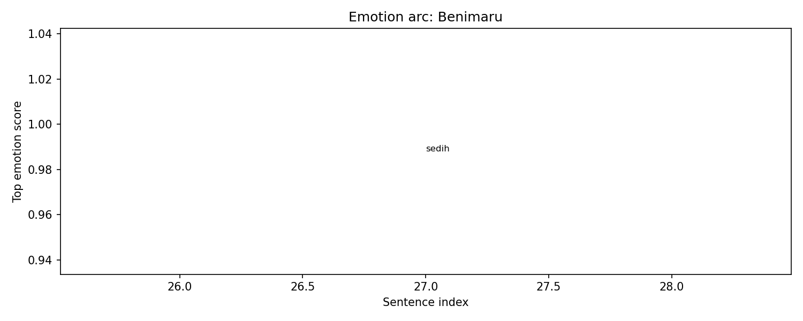
Emotional Arc Summary
In Chapter 244, Benimaru experiences significant sadness, as indicated by the emotion timeline where he feels a score of 0.988 in sadness when expressing that he has sent something to Diablo and himself. This suggests a deep emotional connection to the situation at hand.
Action-Based Interpretation
Benimaru's emotional state is tied to his actions, though specific actions are not provided in the chapter. However, the act of sending something to Diablo and himself hints at a sense of responsibility and concern, reflecting his dedication to his allies.
Key Turning Point
The turning point appears to be his realization of the stakes involved in the ongoing battle against Velda, which evokes deeper emotions regarding loss and accountability for his comrades.
Narrative Meaning
This chapter adds emotional depth to Benimaru, showcasing how personal connections and the weight of responsibility lead to his sadness, lending a more human element to the battle dynamics.
Potential Writing Issue
Given that there are no concrete actions recorded beyond his sentiments, there may be a disconnect between his emotional state and visible actions, potentially creating a sense of inconsistency in character development.
Tuan Rimuru

Emotional Arc Summary
Tuan Rimuru's emotional journey oscillates between joy, anger, and fear. He starts with happiness and confidence due to his strategic advancements, showcasing his hard work and newfound abilities. However, tension rises as he encounters Velda, invoking fear and anger in response to the threat.
Action-Based Interpretation
Rimuru demonstrates strategic wit by using 'Instant Teleportation' and manages to provoke Velda, indicating both confidence and underlying fear. This conflict showcases a mixture of proactive actions and reactive emotions, combining his determination to face Velda with moments of hesitation.
Key Turning Point
The tipping point occurs when Rimuru realizes the source of his energy depletion, linking his emotional state of anger to strategizing for a potential comeback against Velda.
Narrative Meaning
This chapter emphasizes the complexity of Rimuru’s character, merging intellect with emotional depth. The flux between joy and fear represents his struggle against a formidable foe, highlighting the stakes involved.
Potential Writing Issue
There are moments where Rimuru's fear seems heightened without significant events to warrant it, potentially indicating an inconsistency in emotional buildup.
Diablo
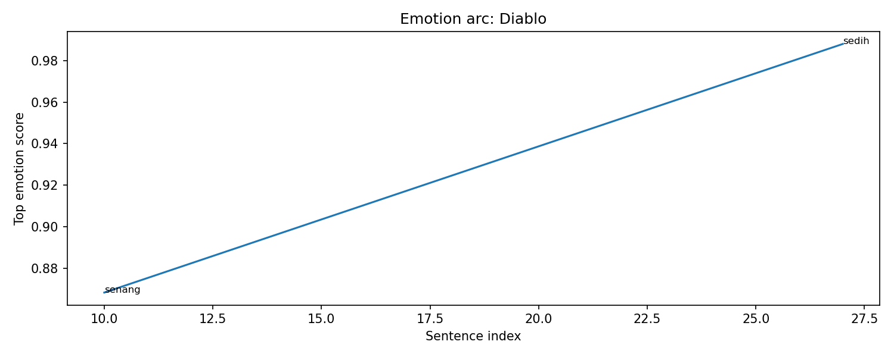
Emotional Arc Summary
Diablo experiences moments of joy and sadness throughout this chapter. He feels joy when he begins to understand the situation from the perspectives of both himself and Veldora. However, this is contrasted sharply by a deep sadness as he reflects on the sacrifices made, particularly related to his allies Benimaru and other free characters.
Action-Based Interpretation
While there are no explicit actions detailed in the chapter, Diablo’s emotional shifts suggest he is processing the stakes of the ongoing battle with Velda. The joy he feels may imply a strategic advantage or personal insight, while the sadness indicates a recognition of loss and sacrifice.
Key Turning Point
The turning point occurs between the pleasurable achievement of understanding his situation and the pang of sadness. This emotional shift suggests that Diablo's internal conflict is central to his character development in this chapter.
Narrative Meaning
The interplay of joy and sadness emphasizes the complexity of Diablo’s character, highlighting the weight of leadership and camaraderie amid conflict.
Potential Writing Issue
The absence of specific actions related to these emotional shifts could lead to inconsistency, as readers may struggle to see how these feelings connect to his decisions or behaviors in the context of the battle.
Mai
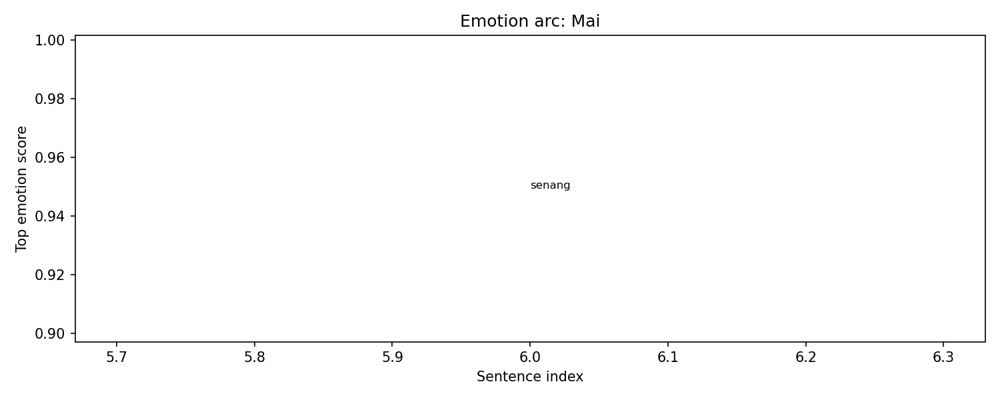
Emotional Arc Summary
In this chapter, Mai experiences a high point of joy, indicated by her happiness score of 0.949. This suggests a moment of optimism related to her exploration of familiar spaces and the limits she perceives as human.
Action-Based Interpretation
While the chapter lacks explicit actions from Mai, her emotional state suggests she may be engaged in introspection or reflections on her past experiences. The joy she feels implies a sense of connection to her past, possibly indicating a deeper understanding of herself amidst the ongoing battle.
Key Turning Point
The key emotional turning point appears to be her realization of the constraints of human experience, bringing her joy, but contrasting with the ongoing conflict against Velda.
Narrative Meaning
This chapter underscores the tension between personal joy and external struggles. Mai's emotional arc reflects her internal growth and the investigation of her identity amidst chaos.
Potential Writing Issue
The absence of specific actions or dialogue to match Mai's emotional highs could create a disconnect for readers, making her joy feel somewhat unsupported or inconsistent with the surrounding conflict.
Event Timeline
Lore Graph
Nodes represent characters, scenes, events, items, facts, and locations.